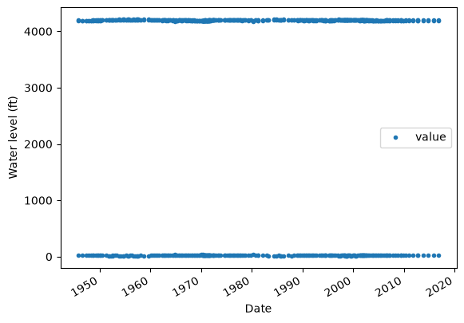

USGS dataretrieval Python Package Groundwater-Level get_field_measurements() Examples
This notebook provides examples of using the Python dataretrieval package to retrieve groundwater level field measurements for a United States Geological Survey (USGS) monitoring location. The dataretrieval package provides a collection of functions to get data from the USGS Water Data API and other online sources of hydrology and water quality data.
Install the Package
Use the following code to install the package if it doesn’t exist already within your Jupyter Python environment.
[1]:
!pip install dataretrieval
Requirement already satisfied: dataretrieval in /opt/hostedtoolcache/Python/3.13.14/x64/lib/python3.13/site-packages (0.1.dev1+g8bb15a2ee)
Requirement already satisfied: httpx in /opt/hostedtoolcache/Python/3.13.14/x64/lib/python3.13/site-packages (from dataretrieval) (0.28.1)
Requirement already satisfied: pandas<4.0.0,>=2.0.0 in /opt/hostedtoolcache/Python/3.13.14/x64/lib/python3.13/site-packages (from dataretrieval) (3.0.3)
Requirement already satisfied: anyio>=4.0 in /opt/hostedtoolcache/Python/3.13.14/x64/lib/python3.13/site-packages (from dataretrieval) (4.14.0)
Requirement already satisfied: numpy>=1.26.0 in /opt/hostedtoolcache/Python/3.13.14/x64/lib/python3.13/site-packages (from pandas<4.0.0,>=2.0.0->dataretrieval) (2.5.0)
Requirement already satisfied: python-dateutil>=2.8.2 in /opt/hostedtoolcache/Python/3.13.14/x64/lib/python3.13/site-packages (from pandas<4.0.0,>=2.0.0->dataretrieval) (2.9.0.post0)
Requirement already satisfied: idna>=2.8 in /opt/hostedtoolcache/Python/3.13.14/x64/lib/python3.13/site-packages (from anyio>=4.0->dataretrieval) (3.18)
Requirement already satisfied: six>=1.5 in /opt/hostedtoolcache/Python/3.13.14/x64/lib/python3.13/site-packages (from python-dateutil>=2.8.2->pandas<4.0.0,>=2.0.0->dataretrieval) (1.17.0)
Requirement already satisfied: certifi in /opt/hostedtoolcache/Python/3.13.14/x64/lib/python3.13/site-packages (from httpx->dataretrieval) (2026.6.17)
Requirement already satisfied: httpcore==1.* in /opt/hostedtoolcache/Python/3.13.14/x64/lib/python3.13/site-packages (from httpx->dataretrieval) (1.0.9)
Requirement already satisfied: h11>=0.16 in /opt/hostedtoolcache/Python/3.13.14/x64/lib/python3.13/site-packages (from httpcore==1.*->httpx->dataretrieval) (0.16.0)
Load the package so you can use it along with other packages used in this notebook.
[2]:
from IPython.display import display
import dataretrieval.waterdata as waterdata
Basic Usage
The dataretrieval package has several functions that allow you to retrieve data from different services of the USGS Water Data API. This example uses the get_field_measurements() function to retrieve groundwater level field measurements. Field measurements are physically measured values collected during a visit to a monitoring location and are commonly used to record groundwater levels. The following arguments are commonly used:
monitoring_location_id (string or list of strings): A unique identifier representing one or more monitoring locations. IDs combine the responsible agency code with the location number, separated by a hyphen (e.g.
USGS-434400121275801).parameter_code (string or list of strings): One or more 5-digit codes identifying the constituent measured and its units of measure.
time (string): The date an observation represents. Accepts a single RFC 3339 date-time, a bounded or half-bounded interval (e.g.
"1980-01-01/2000-12-31","1980-01-01/.."), or an ISO 8601 duration (e.g."P20Y"). Only observations whose time intersects this value are returned.skip_geometry (boolean): If
True, response geometries are omitted and the returned data frame contains no spatial information.
Example 1: Get groundwater level field measurements for a single monitoring location.
[3]:
# Set the parameters needed to retrieve data
site_id = "USGS-434400121275801"
# Retrieve the data
data = waterdata.get_field_measurements(monitoring_location_id=site_id)
print("Retrieved " + str(len(data[0])) + " data values.")
Retrieving: field-measurements · 1 page · 744 rows
No API key detected — register for higher rate limits at https://api.waterdata.usgs.gov/signup/
Retrieved 744 data values.
Interpreting the Result
The get_field_measurements() function returns a tuple of two objects: a pandas data frame containing the requested data and an associated metadata object. The data frame is flat, using a default integer index, and the observation dates are held in its time column.
Once you’ve got the data frame, there are several useful things you can do to explore the data.
Display the data frame as a table
[4]:
display(data[0])
| geometry | field_measurements_series_id | reading_type | field_visit_id | parameter_code | monitoring_location_id | observing_procedure_code | observing_procedure | value | unit_of_measure | ... | approval_status | measuring_agency | last_modified | control_condition | measurement_rated | year | month | day | time_of_day | field_measurement_id | |
|---|---|---|---|---|---|---|---|---|---|---|---|---|---|---|---|---|---|---|---|---|---|
| 0 | POINT (-121.46711 43.73345) | 03469d22-7a5f-4bbe-ba60-b808afaf7e36 | ReferencePrimary | c722cb49-bca8-446f-9b4d-3b152729bb39 | 72019 | USGS-434400121275801 | O | GW level, estim, report, observ | 27.35 | ft | ... | Approved | USGS | 2026-06-13 03:00:33.668130+00:00 | None | None | 1945 | 10 | 12 | 22:35:00+00:00 | 541901c5-023f-4abe-895e-9b928a63c4bb |
| 1 | POINT (-121.46711 43.73345) | e9bcd145-2041-4124-b749-110c5bc2ada9 | ReferencePrimary | c722cb49-bca8-446f-9b4d-3b152729bb39 | 62610 | USGS-434400121275801 | O | GW level, estim, report, observ | 4192.65 | ft | ... | Approved | USGS | 2026-06-13 03:00:33.668130+00:00 | None | None | 1945 | 10 | 12 | 22:35:00+00:00 | a805c1f8-5f44-4060-b656-910eb3d47f65 |
| 2 | POINT (-121.46711 43.73345) | ac601371-e12d-4b22-85db-0c511cea7790 | ReferencePrimary | c722cb49-bca8-446f-9b4d-3b152729bb39 | 62611 | USGS-434400121275801 | O | GW level, estim, report, observ | 4196.67 | ft | ... | Approved | USGS | 2026-06-13 03:00:33.668130+00:00 | None | None | 1945 | 10 | 12 | 22:35:00+00:00 | bf1bce5f-54ff-464d-afa7-7d32c7d9579f |
| 3 | POINT (-121.46711 43.73345) | e9bcd145-2041-4124-b749-110c5bc2ada9 | ReferencePrimary | 0217fd12-a22a-4f4f-a43c-3b9907e2fcc3 | 62610 | USGS-434400121275801 | O | GW level, estim, report, observ | 4190.32 | ft | ... | Approved | OR004 | 2026-06-13 03:00:33.668130+00:00 | None | None | 1946 | 7 | 12 | NaN | 4e2c91bc-2181-4bfb-8945-49220001d8b4 |
| 4 | POINT (-121.46711 43.73345) | 03469d22-7a5f-4bbe-ba60-b808afaf7e36 | ReferencePrimary | 0217fd12-a22a-4f4f-a43c-3b9907e2fcc3 | 72019 | USGS-434400121275801 | O | GW level, estim, report, observ | 29.68 | ft | ... | Approved | OR004 | 2026-06-13 03:00:33.668130+00:00 | None | None | 1946 | 7 | 12 | NaN | 92acb94b-02cc-42e4-8a5a-6026b1e9b51b |
| ... | ... | ... | ... | ... | ... | ... | ... | ... | ... | ... | ... | ... | ... | ... | ... | ... | ... | ... | ... | ... | ... |
| 739 | POINT (-121.46711 43.73345) | 03469d22-7a5f-4bbe-ba60-b808afaf7e36 | ReferencePrimary | 065dc2e2-2e2d-4f40-8d50-3cb3afd914fe | 72019 | USGS-434400121275801 | S | GW level, steel tape | 28.13 | ft | ... | Approved | USGS | 2026-06-13 03:00:33.668130+00:00 | None | None | 2015 | 10 | 22 | 17:52:00+00:00 | e0615969-e6d5-4372-8dd1-babef0b1c271 |
| 740 | POINT (-121.46711 43.73345) | e9bcd145-2041-4124-b749-110c5bc2ada9 | ReferencePrimary | 065dc2e2-2e2d-4f40-8d50-3cb3afd914fe | 62610 | USGS-434400121275801 | S | GW level, steel tape | 4191.87 | ft | ... | Approved | USGS | 2026-06-13 03:00:33.668130+00:00 | None | None | 2015 | 10 | 22 | 17:52:00+00:00 | e8809e7a-df3d-486c-83c5-008e7f22a430 |
| 741 | POINT (-121.46711 43.73345) | ac601371-e12d-4b22-85db-0c511cea7790 | ReferencePrimary | 7b45dc93-704a-4b0d-9772-692a09abc95a | 62611 | USGS-434400121275801 | S | GW level, steel tape | 4195.69 | ft | ... | Approved | USGS | 2026-06-13 03:00:33.668130+00:00 | None | None | 2016 | 10 | 26 | 16:22:00+00:00 | 1e50e56a-bcc2-4438-8db8-931853ea2fc7 |
| 742 | POINT (-121.46711 43.73345) | 03469d22-7a5f-4bbe-ba60-b808afaf7e36 | ReferencePrimary | 7b45dc93-704a-4b0d-9772-692a09abc95a | 72019 | USGS-434400121275801 | S | GW level, steel tape | 28.33 | ft | ... | Approved | USGS | 2026-06-13 03:00:33.668130+00:00 | None | None | 2016 | 10 | 26 | 16:22:00+00:00 | fc440768-3e99-4364-923f-845cc033421d |
| 743 | POINT (-121.46711 43.73345) | e9bcd145-2041-4124-b749-110c5bc2ada9 | ReferencePrimary | 7b45dc93-704a-4b0d-9772-692a09abc95a | 62610 | USGS-434400121275801 | S | GW level, steel tape | 4191.67 | ft | ... | Approved | USGS | 2026-06-13 03:00:33.668130+00:00 | None | None | 2016 | 10 | 26 | 16:22:00+00:00 | ffab2aa1-70d4-49bb-bcca-700c34232b8e |
744 rows × 23 columns
Show the data types of the columns in the resulting data frame.
[5]:
print(data[0].dtypes)
geometry geometry
field_measurements_series_id str
reading_type str
field_visit_id str
parameter_code str
monitoring_location_id str
observing_procedure_code str
observing_procedure str
value float64
unit_of_measure str
time datetime64[us, UTC]
qualifier object
vertical_datum str
approval_status str
measuring_agency str
last_modified datetime64[us, UTC]
control_condition object
measurement_rated object
year int64
month int64
day int64
time_of_day str
field_measurement_id str
dtype: object
Get summary statistics for the measured groundwater level values.
[6]:
data[0]["value"].describe()
[6]:
count 744.000000
mean 2806.776465
std 1969.270464
min 10.900000
25% 27.385000
50% 4194.190000
75% 4199.645000
max 4213.120000
Name: value, dtype: float64
Make a quick time series plot.
[7]:
# This site reports several quantities (depth below land surface as well as
# water-surface elevations above NGVD29/NAVD88), so use a datum-neutral label.
ax = data[0][["time", "value"]].plot(x="time", y="value", style=".")
ax.set_xlabel("Date")
ax.set_ylabel("Water level (ft)")
[7]:
Text(0, 0.5, 'Water level (ft)')

The other part of the result returned from the get_field_measurements() function is a metadata object that contains information about the query that was executed to return the data. For example, you can access the URL that was assembled to retrieve the requested data from the USGS Water Data API.
[8]:
print("The query URL used to retrieve the data from the Water Data API was: " + data[1].url)
The query URL used to retrieve the data from the Water Data API was: https://api.waterdata.usgs.gov/ogcapi/v0/collections/field-measurements/items?monitoring_location_id=USGS-434400121275801&limit=50000
Additional Examples
You can also request data for multiple monitoring locations at the same time.
Example 2: Get data for multiple monitoring locations. The monitoring location ids are passed as a list of strings.
[9]:
site_ids = ["USGS-434400121275801", "USGS-375907091432201"]
data2 = waterdata.get_field_measurements(monitoring_location_id=site_ids)
print("Retrieved " + str(len(data2[0])) + " data values.")
display(data2[0])
Retrieving: field-measurements · 1 page · 933 rows
Retrieved 933 data values.
| geometry | field_measurements_series_id | reading_type | field_visit_id | parameter_code | monitoring_location_id | observing_procedure_code | observing_procedure | value | unit_of_measure | ... | approval_status | measuring_agency | last_modified | control_condition | measurement_rated | year | month | day | time_of_day | field_measurement_id | |
|---|---|---|---|---|---|---|---|---|---|---|---|---|---|---|---|---|---|---|---|---|---|
| 0 | POINT (-121.46711 43.73345) | 03469d22-7a5f-4bbe-ba60-b808afaf7e36 | ReferencePrimary | c722cb49-bca8-446f-9b4d-3b152729bb39 | 72019 | USGS-434400121275801 | O | GW level, estim, report, observ | 27.35 | ft | ... | Approved | USGS | 2026-06-13 03:00:33.668130+00:00 | None | None | 1945 | 10 | 12 | 22:35:00+00:00 | 541901c5-023f-4abe-895e-9b928a63c4bb |
| 1 | POINT (-121.46711 43.73345) | e9bcd145-2041-4124-b749-110c5bc2ada9 | ReferencePrimary | c722cb49-bca8-446f-9b4d-3b152729bb39 | 62610 | USGS-434400121275801 | O | GW level, estim, report, observ | 4192.65 | ft | ... | Approved | USGS | 2026-06-13 03:00:33.668130+00:00 | None | None | 1945 | 10 | 12 | 22:35:00+00:00 | a805c1f8-5f44-4060-b656-910eb3d47f65 |
| 2 | POINT (-121.46711 43.73345) | ac601371-e12d-4b22-85db-0c511cea7790 | ReferencePrimary | c722cb49-bca8-446f-9b4d-3b152729bb39 | 62611 | USGS-434400121275801 | O | GW level, estim, report, observ | 4196.67 | ft | ... | Approved | USGS | 2026-06-13 03:00:33.668130+00:00 | None | None | 1945 | 10 | 12 | 22:35:00+00:00 | bf1bce5f-54ff-464d-afa7-7d32c7d9579f |
| 3 | POINT (-121.46711 43.73345) | e9bcd145-2041-4124-b749-110c5bc2ada9 | ReferencePrimary | 0217fd12-a22a-4f4f-a43c-3b9907e2fcc3 | 62610 | USGS-434400121275801 | O | GW level, estim, report, observ | 4190.32 | ft | ... | Approved | OR004 | 2026-06-13 03:00:33.668130+00:00 | None | None | 1946 | 7 | 12 | NaN | 4e2c91bc-2181-4bfb-8945-49220001d8b4 |
| 4 | POINT (-121.46711 43.73345) | 03469d22-7a5f-4bbe-ba60-b808afaf7e36 | ReferencePrimary | 0217fd12-a22a-4f4f-a43c-3b9907e2fcc3 | 72019 | USGS-434400121275801 | O | GW level, estim, report, observ | 29.68 | ft | ... | Approved | OR004 | 2026-06-13 03:00:33.668130+00:00 | None | None | 1946 | 7 | 12 | NaN | 92acb94b-02cc-42e4-8a5a-6026b1e9b51b |
| ... | ... | ... | ... | ... | ... | ... | ... | ... | ... | ... | ... | ... | ... | ... | ... | ... | ... | ... | ... | ... | ... |
| 928 | POINT (-91.72294 37.98615) | ca0f3961-1a5e-4961-bf55-fd6ac787c98d | ReferencePrimary | 48bfbbaa-5db8-4ba2-9e90-742166552bec | 72019 | USGS-375907091432201 | V | GW level, calib electric tape | 310.46 | ft | ... | Approved | MO005 | 2026-05-24 03:45:01.382842+00:00 | None | None | 2020 | 6 | 19 | 16:04:00+00:00 | 86a25600-2327-4ded-802e-49da0cda3f0f |
| 929 | POINT (-91.72294 37.98615) | a2831c0f-120e-4d81-85e0-2a075f3efe93 | ReferencePrimary | 48bfbbaa-5db8-4ba2-9e90-742166552bec | 62610 | USGS-375907091432201 | V | GW level, calib electric tape | 878.54 | ft | ... | Approved | MO005 | 2026-05-24 03:45:01.382842+00:00 | None | None | 2020 | 6 | 19 | 16:04:00+00:00 | a4c2a304-dcdd-4dc7-abca-84327b0c9f6b |
| 930 | POINT (-91.72294 37.98615) | ca0f3961-1a5e-4961-bf55-fd6ac787c98d | ReferencePrimary | 68eeb933-ea4d-4e8c-be48-605c06cb36fc | 72019 | USGS-375907091432201 | V | GW level, calib electric tape | 313.48 | ft | ... | Approved | MO005 | 2026-05-24 03:45:01.382842+00:00 | None | None | 2020 | 8 | 31 | 13:00:00+00:00 | 6b812ee5-8821-44fb-93cc-2884257c99bb |
| 931 | POINT (-91.72294 37.98615) | 4313fc31-8700-42b7-99fd-87076c30d305 | ReferencePrimary | 68eeb933-ea4d-4e8c-be48-605c06cb36fc | 62611 | USGS-375907091432201 | V | GW level, calib electric tape | 875.66 | ft | ... | Approved | MO005 | 2026-05-24 03:45:01.382842+00:00 | None | None | 2020 | 8 | 31 | 13:00:00+00:00 | 7bbcdb45-2154-4fe3-aee7-c3e2bba2bb9b |
| 932 | POINT (-91.72294 37.98615) | a2831c0f-120e-4d81-85e0-2a075f3efe93 | ReferencePrimary | 68eeb933-ea4d-4e8c-be48-605c06cb36fc | 62610 | USGS-375907091432201 | V | GW level, calib electric tape | 875.52 | ft | ... | Approved | MO005 | 2026-05-24 03:45:01.382842+00:00 | None | None | 2020 | 8 | 31 | 13:00:00+00:00 | 83f31c13-a956-4b43-aa3a-e9cdfe7d674d |
933 rows × 23 columns
The following example requests the same data as the previous example, again passing the monitoring location ids as a list of strings.
[10]:
site_ids = ["USGS-434400121275801", "USGS-375907091432201"]
data2 = waterdata.get_field_measurements(monitoring_location_id=site_ids, )
print("Retrieved " + str(len(data2[0])) + " data values.")
display(data2[0])
Retrieving: field-measurements · 1 page · 933 rows
Retrieved 933 data values.
| geometry | field_measurements_series_id | reading_type | field_visit_id | parameter_code | monitoring_location_id | observing_procedure_code | observing_procedure | value | unit_of_measure | ... | approval_status | measuring_agency | last_modified | control_condition | measurement_rated | year | month | day | time_of_day | field_measurement_id | |
|---|---|---|---|---|---|---|---|---|---|---|---|---|---|---|---|---|---|---|---|---|---|
| 0 | POINT (-121.46711 43.73345) | 03469d22-7a5f-4bbe-ba60-b808afaf7e36 | ReferencePrimary | c722cb49-bca8-446f-9b4d-3b152729bb39 | 72019 | USGS-434400121275801 | O | GW level, estim, report, observ | 27.35 | ft | ... | Approved | USGS | 2026-06-13 03:00:33.668130+00:00 | None | None | 1945 | 10 | 12 | 22:35:00+00:00 | 541901c5-023f-4abe-895e-9b928a63c4bb |
| 1 | POINT (-121.46711 43.73345) | e9bcd145-2041-4124-b749-110c5bc2ada9 | ReferencePrimary | c722cb49-bca8-446f-9b4d-3b152729bb39 | 62610 | USGS-434400121275801 | O | GW level, estim, report, observ | 4192.65 | ft | ... | Approved | USGS | 2026-06-13 03:00:33.668130+00:00 | None | None | 1945 | 10 | 12 | 22:35:00+00:00 | a805c1f8-5f44-4060-b656-910eb3d47f65 |
| 2 | POINT (-121.46711 43.73345) | ac601371-e12d-4b22-85db-0c511cea7790 | ReferencePrimary | c722cb49-bca8-446f-9b4d-3b152729bb39 | 62611 | USGS-434400121275801 | O | GW level, estim, report, observ | 4196.67 | ft | ... | Approved | USGS | 2026-06-13 03:00:33.668130+00:00 | None | None | 1945 | 10 | 12 | 22:35:00+00:00 | bf1bce5f-54ff-464d-afa7-7d32c7d9579f |
| 3 | POINT (-121.46711 43.73345) | e9bcd145-2041-4124-b749-110c5bc2ada9 | ReferencePrimary | 0217fd12-a22a-4f4f-a43c-3b9907e2fcc3 | 62610 | USGS-434400121275801 | O | GW level, estim, report, observ | 4190.32 | ft | ... | Approved | OR004 | 2026-06-13 03:00:33.668130+00:00 | None | None | 1946 | 7 | 12 | NaN | 4e2c91bc-2181-4bfb-8945-49220001d8b4 |
| 4 | POINT (-121.46711 43.73345) | 03469d22-7a5f-4bbe-ba60-b808afaf7e36 | ReferencePrimary | 0217fd12-a22a-4f4f-a43c-3b9907e2fcc3 | 72019 | USGS-434400121275801 | O | GW level, estim, report, observ | 29.68 | ft | ... | Approved | OR004 | 2026-06-13 03:00:33.668130+00:00 | None | None | 1946 | 7 | 12 | NaN | 92acb94b-02cc-42e4-8a5a-6026b1e9b51b |
| ... | ... | ... | ... | ... | ... | ... | ... | ... | ... | ... | ... | ... | ... | ... | ... | ... | ... | ... | ... | ... | ... |
| 928 | POINT (-91.72294 37.98615) | ca0f3961-1a5e-4961-bf55-fd6ac787c98d | ReferencePrimary | 48bfbbaa-5db8-4ba2-9e90-742166552bec | 72019 | USGS-375907091432201 | V | GW level, calib electric tape | 310.46 | ft | ... | Approved | MO005 | 2026-05-24 03:45:01.382842+00:00 | None | None | 2020 | 6 | 19 | 16:04:00+00:00 | 86a25600-2327-4ded-802e-49da0cda3f0f |
| 929 | POINT (-91.72294 37.98615) | a2831c0f-120e-4d81-85e0-2a075f3efe93 | ReferencePrimary | 48bfbbaa-5db8-4ba2-9e90-742166552bec | 62610 | USGS-375907091432201 | V | GW level, calib electric tape | 878.54 | ft | ... | Approved | MO005 | 2026-05-24 03:45:01.382842+00:00 | None | None | 2020 | 6 | 19 | 16:04:00+00:00 | a4c2a304-dcdd-4dc7-abca-84327b0c9f6b |
| 930 | POINT (-91.72294 37.98615) | ca0f3961-1a5e-4961-bf55-fd6ac787c98d | ReferencePrimary | 68eeb933-ea4d-4e8c-be48-605c06cb36fc | 72019 | USGS-375907091432201 | V | GW level, calib electric tape | 313.48 | ft | ... | Approved | MO005 | 2026-05-24 03:45:01.382842+00:00 | None | None | 2020 | 8 | 31 | 13:00:00+00:00 | 6b812ee5-8821-44fb-93cc-2884257c99bb |
| 931 | POINT (-91.72294 37.98615) | 4313fc31-8700-42b7-99fd-87076c30d305 | ReferencePrimary | 68eeb933-ea4d-4e8c-be48-605c06cb36fc | 62611 | USGS-375907091432201 | V | GW level, calib electric tape | 875.66 | ft | ... | Approved | MO005 | 2026-05-24 03:45:01.382842+00:00 | None | None | 2020 | 8 | 31 | 13:00:00+00:00 | 7bbcdb45-2154-4fe3-aee7-c3e2bba2bb9b |
| 932 | POINT (-91.72294 37.98615) | a2831c0f-120e-4d81-85e0-2a075f3efe93 | ReferencePrimary | 68eeb933-ea4d-4e8c-be48-605c06cb36fc | 62610 | USGS-375907091432201 | V | GW level, calib electric tape | 875.52 | ft | ... | Approved | MO005 | 2026-05-24 03:45:01.382842+00:00 | None | None | 2020 | 8 | 31 | 13:00:00+00:00 | 83f31c13-a956-4b43-aa3a-e9cdfe7d674d |
933 rows × 23 columns
Some groundwater level data have dates that include only a year or a month and year, but no day.
Example 3: Retrieve groundwater level data that have dates without a day.
[11]:
data3 = waterdata.get_field_measurements(monitoring_location_id="USGS-425957088141001")
print("Retrieved " + str(len(data3[0])) + " data values.")
# Observation dates live in the 'time' column (the data frame uses a plain
# integer index). Where the original record gave only a year or a year and
# month, the Water Data API normalizes the value to a UTC timestamp with the
# missing day/time defaulted, so these appear as ordinary timestamps.
print(data3[0]["time"].head(10))
Retrieving: field-measurements · 1 page · 102 rows
Retrieved 102 data values.
0 1945-12-01 12:00:00+00:00
1 1945-12-01 12:00:00+00:00
2 1945-12-01 12:00:00+00:00
3 1946-12-01 12:00:00+00:00
4 1946-12-01 12:00:00+00:00
5 1946-12-01 12:00:00+00:00
6 1947-01-01 12:00:00+00:00
7 1947-01-01 12:00:00+00:00
8 1947-01-01 12:00:00+00:00
9 1948-01-01 12:00:00+00:00
Name: time, dtype: datetime64[us, UTC]
If you want to inspect the request that was sent, you can get the URL for the query that was issued to the USGS Water Data API.
[12]:
# Print the URL used to retrieve the data
print("You can examine the data retrieved from the Water Data API at: " + data3[1].url)
You can examine the data retrieved from the Water Data API at: https://api.waterdata.usgs.gov/ogcapi/v0/collections/field-measurements/items?monitoring_location_id=USGS-425957088141001&limit=50000
You can also retrieve data for a monitoring location within a specified time window by giving a start and end date.
Example 4: Get groundwater level data for a monitoring location between a start and end date.
[13]:
data4 = waterdata.get_field_measurements(monitoring_location_id=site_id, time="1980-01-01/2000-12-31")
print("Retrieved " + str(len(data4[0])) + " data values.")
Retrieving: field-measurements · 1 page · 213 rows
Retrieved 213 data values.